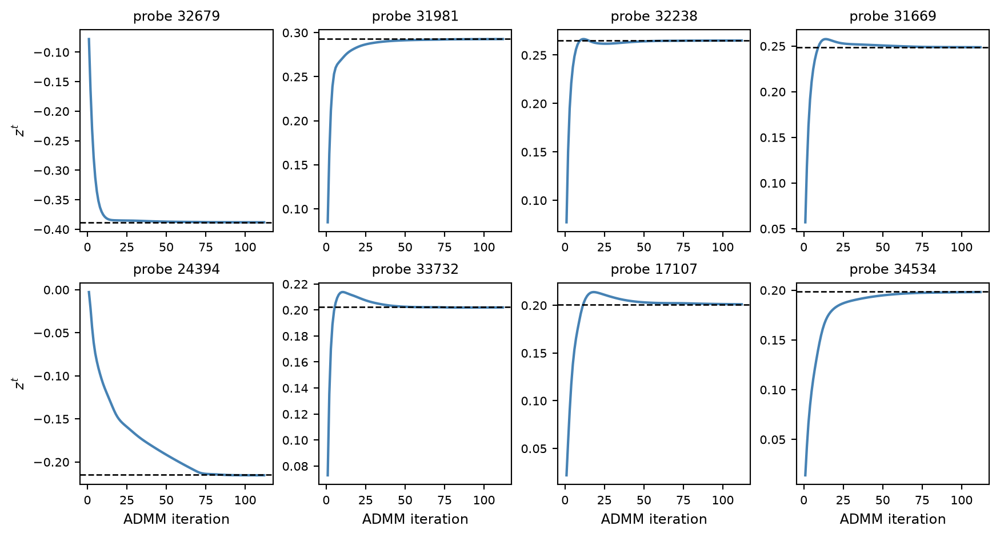

import numpy as np
from homomorphepy import load_dlbcl, load_dlbcl_gex, site_order
df = load_dlbcl() # 235 patients: survival + signatures
gex, _, probe_names = load_dlbcl_gex() # 235 patients x 6416 Lymphochip probes
def site_raw(name):
m = (df["Subgroup"] == name).to_numpy()
return {"name": name,
"X": gex[m],
"time": df["time"].to_numpy(dtype=float)[m],
"status": df["status"].to_numpy(dtype=int)[m]}
sites_raw = [site_raw(n) for n in site_order()]
N_sites = len(sites_raw)
N_total = sum(len(s["time"]) for s in sites_raw)
P_raw = sites_raw[0]["X"].shape[1]Federated Cox-Lasso via Consensus ADMM on DLBCL
Introduction
This page runs the threshold-FHE consensus-ADMM protocol on a real, high-dimensional survival problem: a stratified Cox lasso on the diffuse large-B-cell lymphoma (DLBCL) gene-expression cohort of Rosenwald et al. (2002), the dataset Bayle et al. (2025) use to motivate distributed Cox estimation.
The Cox and Cox threshold pages give an optimizer such as scipy.optimize.minimize() an objective function that runs one encrypted round across the sites. That does not work for cvxpy, which does not call a function we supply: it converts a symbolic problem once to a standard form and passes that to a solver. Instead we use federated consensus ADMM (Boyd et al. 2011). The global problem is split into per-site subproblems, each solved by cvxpy in the clear, and only the cross-site consensus average is encrypted. Disciplined parametrized programming (DPP) keeps the per-site solves fast: between iterations only the Parameter values change, not the problem structure.
We develop the fit in two passes. First we run the whole thing in the clear to fix the target: standardize, screen, and solve the consensus ADMM with an ordinary unencrypted average, checking against the centralized cvxpy solve. Then we put it under threshold FHE, replacing each cross-site sum — the standardization moments, the screening statistics, and the per-iteration consensus average — with one round of the encrypted-summation primitive, and confirm the encrypted fit reproduces the in-the-clear reference.
Reproducibility and verification. Standardization and screening run live on this page. The two ADMM runs do not: every encrypted ADMM iteration repeats the per-site cvxpy solves, which is too slow for a render. Their results come from a recorded run produced by
docs/_recorded/record_cox_lasso.py, which calls the same code; the page reads the JSON it writes and reports the run’s wall-clock time at the end. To verify the results, re-run the script:OMP_NUM_THREADS=2 uv run python docs/_recorded/record_cox_lasso.pyThreshold key generation is randomized, so a re-run reproduces the recorded coefficients up to CKKS approximation noise, not bit-for-bit.
The global problem and its consensus split
The three molecular subgroups (GCB, ABC, Type III) are our sites: they arise from different cells of origin and have systematically different prognosis. Using them as sites is a choice made for this demonstration. With \(N\) sites, per-site standardized design matrices \(X_k \in \mathbb{R}^{n_k \times p}\), event times \(t_k\), status \(\delta_k\), a shared coefficient \(\beta \in \mathbb{R}^p\), and the per-stratum Cox partial log-likelihood \(\ell_k\) in Breslow form, the global problem is
\[ \min_{\beta \in \mathbb{R}^p}\; -\sum_{k=1}^{N}\ell_k(\beta)\;+\;\lambda\lVert\beta\rVert_1 . \]
Because the partial likelihood factorizes additively across strata, the consensus split introduces per-site copies \(x_k\) and a global consensus \(z\):
\[ \min_{\{x_k\},\,z}\; \sum_k\bigl(-\ell_k(x_k)\bigr) + \lambda\lVert z\rVert_1 \quad\text{s.t.}\quad x_k = z,\ \forall k, \]
with augmented-Lagrangian iteration
\[ \begin{aligned} x_k^{t+1} &= \arg\min_x -\ell_k(x) + \tfrac{\rho}{2}\lVert x - z^t + u_k^t\rVert_2^2,\\ z^{t+1} &= S_{\lambda/(N\rho)}\!\Bigl(\tfrac{1}{N}\sum_k (x_k^{t+1}+u_k^t)\Bigr),\\ u_k^{t+1} &= u_k^t + (x_k^{t+1}-z^{t+1}), \end{aligned} \]
where \(S_\tau(v)=\operatorname{sign}(v)\max(|v|-\tau,0)\) is soft-thresholding (the proximal map of \(\tau\lVert\cdot\rVert_1\)). The \(x\)-update is the per-site cvxpy solve; the \(z\)-update needs the cross-site average \(\bar w=\tfrac1N\sum_k(x_k+u_k)\), which traverses the encrypted channel at every iteration; the soft-threshold is closed-form at the aggregator and adds no cryptographic depth.
The federated fit in the clear
The three subgroups are our sites. We load the cohort, split it by subgroup, and keep each site’s raw expression matrix, event times, and status.
We standardize the features so the L1 penalty applies uniformly across predictors on different scales. The pooled mean and variance are additive over sites: site \(k\) contributes \(S_k=\sum_{i\in k}x_i\) and \(Q_k=\sum_{i\in k}x_i^2\), from which \(\mu=\tfrac1{N_{\mathrm{tot}}}\sum_k S_k\) and \(\sigma^2=\tfrac1{N_{\mathrm{tot}}}\sum_k Q_k-\mu^2\). In the clear this is a pair of column sums.
def pool_plain(sites, n_total):
s = sum(s["X"].sum(axis=0) for s in sites)
q = sum((s["X"] ** 2).sum(axis=0) for s in sites)
mu = s / n_total
sigma2 = np.maximum(q / n_total - mu**2, np.finfo(float).eps)
return {"mu": mu, "sigma": np.sqrt(sigma2)}
# Each site standardizes its own rows with the pooled moments.
def standardize(sites, pool):
return [{**s, "X": (s["X"] - pool["mu"]) / pool["sigma"]} for s in sites]
pool = pool_plain(sites_raw, N_total)
sites_std = standardize(sites_raw, pool)Rather than fit all \(p = 6416\) probes, we pre-screen to the \(K = 100\) probes with the strongest univariate association with survival. This keeps the memory footprint of the example manageable, and it is the screen-then-fit pattern Bayle et al. (2025) use on this cohort. For probe \(g\) on stratum \(k\) in event-time order with risk set \(R_i^{(k)}\) at event \(i\), \(U_g^{(k)}=\sum_{i\in k,\delta_i=1}(X_{i,g}-\overline X_{R_i^{(k)},g})\) is the score and \(I_g^{(k)}=\sum_{i\in k,\delta_i=1}\widehat{\operatorname{Var}}_{R_i^{(k)}}(X_{:,g})\) the information; both sum across sites, and the screen ranks probes by \(|Z_g|=|U_g|/\sqrt{I_g}\).
from homomorphepy.examples.cox_lasso import _score_info_at_zero as score_info_at_zero
def screen_plain(sites, K):
UI = [score_info_at_zero(s["X"], s["time"], s["status"]) for s in sites]
U = sum(u for u, _ in UI)
I = sum(i for _, i in UI)
Z = U / np.sqrt(np.maximum(I, np.finfo(float).eps))
# kind="stable": ties at the K boundary break by index. 1-based.
return np.argsort(-np.abs(Z), kind="stable")[:K] + 1
# Each site keeps the screened probes of its own rows.
def keep_probes(sites, idx):
return [{**s, "X": s["X"][:, idx - 1]} for s in sites]
top_idx = screen_plain(sites_std, K)
sites_KS = keep_probes(sites_std, top_idx)
sigma_K = pool["sigma"][top_idx - 1]sites_KS now holds each stratum on the \(K = 100\) screened probes, and sigma_K keeps their pooled SDs for the back-transform to the original gene-expression scale.
The centralized stratified Cox-lasso fit — our ground truth — is a single cvxpy solve summing the per-stratum Breslow partial likelihoods plus the L1 penalty.
import inspect
from homomorphepy.examples import cox_lasso
print(inspect.getsource(cox_lasso._breslow_nll))def _breslow_nll(beta, X, time, status):
"""Cox partial NLL as a cvxpy expression (Breslow ties).
``sum_j in events [ log_sum_exp(eta_{R_j}) - eta_j ]``, where the
risk set ``R_j`` is every row with ``time >= t_j``, tied rows
included. This is exactly the Breslow partial likelihood; Efron has
no equivalent convex-atom form, which is why this example and
:mod:`.cox` use different tie conventions.
"""
order = np.argsort(time, kind="stable")
Xo, so, to = X[order], status[order], time[order]
first = np.searchsorted(to, to, side="left")
eta = Xo @ beta
terms = [
cp.log_sum_exp(eta[first[i]:]) - eta[i] for i in range(len(so)) if so[i] == 1
]
return cp.sum(terms) if len(terms) > 1 else terms[0]
import cvxpy as cp
from homomorphepy.examples.cox_lasso import _breslow_nll
beta_var = cp.Variable(K)
nll_per = [_breslow_nll(beta_var, s["X"], s["time"], s["status"]) for s in sites_KS]
agg_prob = cp.Problem(cp.Minimize(cp.sum(nll_per) + LAMBDA * cp.norm1(beta_var)))
agg_prob.solve(solver=cox_lasso.SOLVER, verbose=False)
agg_beta = np.asarray(beta_var.value, dtype=float).ravel()The distributed fit splits this objective into per-site subproblems tied by a consensus variable. Each local problem is built so DPP applies: \(z\) and \(u\) enter as Parameters whose values change every ADMM iteration while the symbolic structure does not; \(X_k\), time, status, and \(\rho\) are constants.
print(inspect.getsource(cox_lasso.build_local))def build_local(X, time, status, rho: float) -> dict:
"""One site's ADMM subproblem, built once.
``z`` and ``u`` are cvxpy Parameters, so the problem canonicalizes
once and every iteration only changes their values.
"""
p = X.shape[1]
x = cp.Variable(p)
zp = cp.Parameter(p, value=np.zeros(p))
up = cp.Parameter(p, value=np.zeros(p))
obj = _breslow_nll(x, X, time, status) + (rho / 2) * cp.sum_squares(x - zp + up)
return {"prob": cp.Problem(cp.Minimize(obj)), "x": x, "zp": zp, "up": up}
from homomorphepy.examples.cox_lasso import build_local
sites_problem = [build_local(s["X"], s["time"], s["status"], RHO) for s in sites_KS]The ADMM driver below is the whole federated algorithm. How the cross-site average is formed is left to its consensus argument, a function of the per-site \((x_k,u_k)\) vectors. Everything else (the local cvxpy solves, the soft-threshold \(z\)-update, the dual update, the stopping rule) is ordinary Python. The recorded run calls it first with an unencrypted average and then, unchanged, with an encrypted one.
A note on the constants. We fix \(\rho = 50\) and a cap of 200 iterations, and stop when the absolute rule primal < TOL and dual < TOL holds, with TOL = 0\.005; the dual residual is \(\rho\lVert z^{t+1}-z^t\rVert\).
print(inspect.getsource(cox_lasso.run_admm))
print(inspect.getsource(cox_lasso.plain_consensus))def run_admm(locals_, consensus):
"""The consensus-ADMM driver.
``consensus(site_x, site_u)`` returns the average of the per-site
``x_k + u_k`` vectors. Called once with an unencrypted average and
once, unchanged, with an encrypted one. Returns ``(z, trajectory)``.
"""
n_sites = len(locals_)
site_x = [np.zeros(K) for _ in locals_]
site_u = [np.zeros(K) for _ in locals_]
z_curr = np.zeros(K)
trajectory: list[np.ndarray] = []
for _ in range(MAX_ITER):
for i, lp in enumerate(locals_):
lp["zp"].value = z_curr
lp["up"].value = site_u[i]
_solve(lp["prob"])
site_x[i] = np.asarray(lp["x"].value, dtype=float).ravel()
w_avg = consensus(site_x, site_u)
z_new = soft_threshold(w_avg, LAMBDA / (n_sites * RHO))
site_u = [u + (x - z_new) for u, x in zip(site_u, site_x, strict=True)]
primal = float(np.sqrt(np.mean([np.sum((x - z_new) ** 2) for x in site_x])))
dual = float(RHO * np.linalg.norm(z_new - z_curr))
z_curr = z_new
trajectory.append(z_curr.copy())
if primal < TOL and dual < TOL:
break
return z_curr, trajectory
def plain_consensus(site_x, site_u) -> np.ndarray:
"""The consensus average, computed in the clear."""
return sum(x + u for x, u in zip(site_x, site_u, strict=True)) / len(site_x)
from homomorphepy.examples.cox_lasso import run_admm, plain_consensus
z_ref, ref_trajectory = run_admm(sites_problem, plain_consensus)
n_iter_ref = len(ref_trajectory)In the clear the consensus is a single line — the average of the \((x_k+u_k)\) vectors. In the recorded run the unencrypted ADMM converges in 112 iterations and matches the centralized cvxpy fit to 2.6e-03 in maximum absolute coefficient difference, so agg_beta — equivalently z_ref — is the target the encrypted protocol must reproduce.
The same fit under threshold FHE
Four quantities cross a site boundary: the standardization moments \((S_k,Q_k)\), the screening statistics \((U^{(k)},I^{(k)})\), and, at each ADMM iteration, the consensus sum \(\sum_k(x_k+u_k)\) and the squared primal residuals \(\lVert x_k-z\rVert^2\) of the stopping rule. run_admm forms the primal residual in the clear here; in a deployment it is one more sum of the same kind. Each of the first three is a sum over sites, so each becomes one round of the same threshold-FHE summation primitive the master/worker fits use: every site encrypts its contribution under the joint public key, the aggregator adds the encrypted contributions, and the total is recovered by \(n\)-of-\(n\) partial decryption. For the consensus, the encrypted total is first scaled by \(1/N\), so what is decrypted is the average \(\bar w\). The local cvxpy work and run_admm are untouched.
We use the same threshold infrastructure as the Cox threshold page: a CKKS context and make_threshold_master(), which enables MULTIPARTY on it and runs the key-generation chain through the sites. Each site generates its own share and keeps it; only public keys move along the chain, so no party — the aggregator included — ever holds the joint secret.
So the sites have to exist before the aggregator does. Here we give each subgroup a site object to hold its share.
from homomorphepy import fhe_context, make_worker, make_threshold_master
from homomorphepy.examples.cox_lasso import CKKS_PARAMS
cc = fhe_context("CKKS", **CKKS_PARAMS)
key_sites = [make_worker(s["name"], None, lambda data, theta: 0.0) for s in sites_raw]
master = make_threshold_master("Aggregator", cc, key_sites)
CKKS_PARAMS{'multiplicative_depth': 1,
'scaling_mod_size': 59,
'first_mod_size': 60,
'batch_size': 8192}Apart from the encrypted values in each round, this setup is the only exchange between the aggregator and the sites. Each site kept its own secret share and a copy of the public parameters, and everything below encrypts with site.encrypt(value), which uses those parameters. site.params returns them as an OpenFHEParams object. Its class has two slots, the crypto context and the joint public key, and none for a key share:
type(key_sites[0].params).__name__, key_sites[0].params.__slots__('OpenFHEParams', ('_ctx', '_pk'))The standardization round is pool_plain with the two column sums encrypted: each site encrypts \(S_k\) and \(Q_k\), the aggregator sums under encryption and threshold-decrypts the pooled moments. The decrypted moments go back to the sites, which standardize their own rows with them. (For brevity we treat \(N_{\mathrm{tot}}\) as known to the aggregator; hiding the per-site head-counts is one more sum of the same kind.)
# Site side. Each site forms its own moments and encrypts them under
# the joint key; what leaves is encrypted. Encrypting at the
# aggregator instead would mean handing it the per-site column sums in
# the clear first, which is the disclosure this round exists to avoid.
def site_moments(site, s):
return {"sum": site.encrypt(s["X"].sum(axis=0)),
"sumsq": site.encrypt((s["X"] ** 2).sum(axis=0))}
# Aggregator side. It receives only the encrypted moments, adds them,
# and decrypts the totals.
def pool_encrypted(master, parts, n_total, p_raw):
pooled_sum = np.asarray(master.decrypt(sum(p["sum"] for p in parts), length=p_raw), dtype=float)
pooled_sumsq = np.asarray(master.decrypt(sum(p["sumsq"] for p in parts), length=p_raw), dtype=float)
mu = pooled_sum / n_total
sigma2 = np.maximum(pooled_sumsq / n_total - mu**2, np.finfo(float).eps)
return {"mu": mu, "sigma": np.sqrt(sigma2)}
moment_parts = [site_moments(k, s) for k, s in zip(key_sites, sites_raw, strict=True)] # at the sites
fhe_pool = pool_encrypted(master, moment_parts, N_total, P_raw)
pool_agree = {"mu": float(np.max(np.abs(fhe_pool["mu"] - pool["mu"]))),
"sigma": float(np.max(np.abs(fhe_pool["sigma"] - pool["sigma"])))}
# The decrypted moments go back to the sites, which standardize their
# own rows with them.
sites_std_fhe = standardize(sites_raw, fhe_pool)The encrypted moments agree with the unencrypted pool to 4.4e-16 (mean) and 3.1e-15 (SD), the CKKS approximation error. The screening round works the same way, on the rows the sites have just standardized: the score_info_at_zero summands \((U^{(k)},I^{(k)})\) are encrypted and summed, and we confirm it selects the same probes, in the same order.
# Site side: compute the score and information at beta = 0 on the
# site's own rows, and encrypt both before returning them.
def site_score_info(site, s):
U, I = score_info_at_zero(s["X"], s["time"], s["status"])
return {"U": site.encrypt(U), "I": site.encrypt(I)}
# Aggregator side: it receives only the encrypted (U, I), adds them,
# and decrypts the totals.
def screen_encrypted(master, UI, p_raw, K):
U = np.asarray(master.decrypt(sum(p["U"] for p in UI), length=p_raw), dtype=float)
I = np.asarray(master.decrypt(sum(p["I"] for p in UI), length=p_raw), dtype=float)
Z = U / np.sqrt(np.maximum(I, np.finfo(float).eps))
return np.argsort(-np.abs(Z), kind="stable")[:K] + 1
UI_parts = [site_score_info(k, s) for k, s in zip(key_sites, sites_std_fhe, strict=True)] # at the sites
fhe_top = screen_encrypted(master, UI_parts, P_raw, K)
assert np.array_equal(fhe_top, top_idx) # same probes, same order, as in the clear
# The decrypted screen goes back to the sites, which keep those probes.
sites_KS_fhe = keep_probes(sites_std_fhe, fhe_top)The encrypted ADMM below runs on the design the two encrypted rounds produced: each site’s rows, standardized with the decrypted pooled moments and restricted to the decrypted screen. The in-the-clear design serves only as the reference. The consensus round is the only piece left to encrypt. It mirrors plain_consensus. Each site encrypts its own \((x_k+u_k)\). The aggregator sums the encrypted values, scales by \(1/N\) (one multiplication by an unencrypted constant, which uses one level of multiplicative depth), and threshold-decrypts the length-\(K\) average. Soft-thresholding is applied to that average in the clear at the aggregator.
# Site side: site k forms x_k + u_k and encrypts it. What leaves the
# site is encrypted.
def site_consensus_term(site, x_k, u_k):
return site.encrypt(x_k + u_k)
# Aggregator side: it receives only the encrypted terms, adds them,
# scales by 1/N, and decrypts the average.
def aggregate_consensus(master, cts, K):
return np.asarray(master.decrypt(sum(cts) * (1.0 / len(cts)), length=K), dtype=float)
# One consensus round: the site step at every site, then the
# aggregator step.
def encrypted_consensus(site_x, site_u):
return aggregate_consensus(
master,
[site_consensus_term(k, x, u) for k, x, u in zip(key_sites, site_x, site_u, strict=True)],
K)# The local problems, on the design the encrypted rounds produced.
sites_problem_fhe = [build_local(s["X"], s["time"], s["status"], RHO) for s in sites_KS_fhe]
z_enc, trajectory = run_admm(sites_problem_fhe, encrypted_consensus)
n_iter_enc = len(trajectory)run_admm is called unchanged, on local problems built from the encrypted-round design and with encrypted_consensus in place of plain_consensus. In the recorded run the encrypted ADMM ran for 112 iterations, and its coefficients differ from the unencrypted run by at most 8.0e-07, the CKKS approximation error.
Comparison with the centralized fit
We compare the threshold-FHE consensus to the centralized cvxpy fit on both the standardized scale (where ADMM lives) and the back-transformed original gene-expression scale.
import pandas as pd
z_enc = np.asarray(rec["beta_admm"])
agg_beta = np.asarray(rec["beta_centralized"])
beta_orig_agg = agg_beta / sigma_K
beta_orig_enc = z_enc / sigma_K
cmp = pd.DataFrame({
"Scale": ["standardized", "original"],
"Max abs diff": [np.max(np.abs(z_enc - agg_beta)),
np.max(np.abs(beta_orig_enc - beta_orig_agg))],
"L1 diff": [np.sum(np.abs(z_enc - agg_beta)),
np.sum(np.abs(beta_orig_enc - beta_orig_agg))],
}).round(4)
n_agg = int(np.sum(np.abs(agg_beta) > 1e-7))
n_enc = int(np.sum(np.abs(z_enc) > 1e-7))
n_inter = int(np.sum((np.abs(agg_beta) > 1e-7) & (np.abs(z_enc) > 1e-7)))
assert n_inter == n_agg # the prose below asserts this
cmp| Scale | Max abs diff | L1 diff | |
|---|---|---|---|
| 0 | standardized | 0.0026 | 0.0096 |
| 1 | original | 0.0048 | 0.0166 |
The active set has 39 nonzero coefficients in the centralized fit and 39 in the encrypted ADMM fit; the intersection is 39 — every probe selected by the centralized fit is recovered by the encrypted distributed protocol.
The figure below shows the consensus trajectory \(z^t\) for the eight probes with largest \(|z|\) at convergence, with the centralized fit drawn as a horizontal reference. The encrypted iterates follow ADMM’s own trajectory toward the centralized fit; they are not iterations of the centralized solver.
import matplotlib.pyplot as plt
traj = np.asarray(rec["trajectory"]) # (n_iter, K)
top8 = np.argsort(-np.abs(z_enc))[:8]
screened = np.asarray(rec["top_idx"]) - 1 # 0-based probe columns
fig, axes = plt.subplots(2, 4, figsize=(9, 4.8), constrained_layout=True)
it = np.arange(1, traj.shape[0] + 1)
for ax, j in zip(axes.ravel(), top8, strict=True):
ax.plot(it, traj[:, j], lw=1.6, color="steelblue")
ax.axhline(agg_beta[j], ls="--", color="black", lw=1.0)
ax.set_title(f"probe {probe_names[screened[j]]}", fontsize=9)
ax.tick_params(labelsize=8)
for ax in axes[-1]:
ax.set_xlabel("ADMM iteration", fontsize=9)
for ax in axes[:, 0]:
ax.set_ylabel(r"$z^t$", fontsize=9)
plt.show()
The recorded run took 23 minutes.
What the protocol hides and reveals
The aggregator learns the pooled per-probe sums \(\sum_k S_k\) and \(\sum_k Q_k\) (round 1), the pooled per-probe univariate Cox score \(U_g\) and information \(I_g\) and the indices of the top-100 screened probes (round 2), and, at every ADMM iteration, the cross-site average \(\bar w\) before soft-thresholding and the primal residual. Each is an aggregated population-level statistic over 235 patients, not patient-level data. None of the per-site design matrices \(X_k\), the per-site \((S_k,Q_k)\), the per-site \((U,I)\) contributions, or the per-site \((x_k+u_k)\) vectors reaches the aggregator in cleartext. Decryption at every step is \(n\)-of-\(n\) threshold: no single party — the aggregator included — can recover any intermediate quantity unilaterally.
Two steps on this page would not exist in a real deployment. The unencrypted reference pass forms the per-site averages that the protocol keeps encrypted, and the centralized solve pools all the data. We can run both only because this page holds all three sites’ data in one process. A deployment also has to choose \(\rho\) without the centralized solve.
A deployment can instead choose \(\rho\) on a surrogate cohort built from public design facts, as the consensus ADMM under DP page does. When the protocol also spends a privacy budget, as on that page, encrypting the sweep is not enough, and the constants have to be chosen from data that does not count against the budget.
Discussion
- cvxpy problems work unchanged. Each site solves its local Cox-lasso problem in the clear. Only the consensus update is encrypted. The cvxpy
Problem(Minimize(...))is the same as in the clear, andrun_admmis called withencrypted_consensusinstead ofplain_consensus. - Encryption does not change the fit. The encrypted fit matches the unencrypted ADMM to 8.0e-07 and has the same active set. The remaining gap to the centralized solve (2.6e-03) comes from stopping ADMM at a finite tolerance, not from the encryption.
- No single party holds the secret key. Each site generated its own share during key generation and kept it. The aggregator holds only the joint public key. No single party can decrypt an intermediate value, and each round’s result is decrypted only when every site contributes a partial decryption.
- DPP keeps the inner loop fast. Each site’s cvxpy problem is built once at setup; ADMM iterations only update the
Parametervalues.
Limitations
- Honest-but-curious trust. A site that misreports its local \((x_k+u_k)\) can corrupt the consensus; detecting this needs commitments / zero-knowledge proofs not implemented here.
- The aggregator sees \(\bar w\) at every iteration. It is decrypted before soft-thresholding, so it includes the coordinates that \(z^t\) sets to zero.
- No output privacy. The released \(\hat\beta = z^\star\) is the same coefficient vector as the centralized fit; output-level protection is out of scope here and is demonstrated on the companion consensus ADMM under DP page.
References
Bayle, Pierre, Jianqing Fan, and Zhipeng Lou. 2025. “Communication-Efficient Distributed Estimation and Inference for Cox’s Model.” Journal of the American Statistical Association 120 (551): 1736–46. https://doi.org/10.1080/01621459.2025.2516820.
Boyd, Stephen, Neal Parikh, Eric Chu, Borja Peleato, and Jonathan Eckstein. 2011. “Distributed Optimization and Statistical Learning via the Alternating Direction Method of Multipliers.” Foundations and Trends in Machine Learning 3 (1): 1–122. https://doi.org/10.1561/2200000016.
Rosenwald, Andreas, George Wright, Wing C. Chan, et al. 2002. “The Use of Molecular Profiling to Predict Survival After Chemotherapy for Diffuse Large-B-Cell Lymphoma.” New England Journal of Medicine 346 (25): 1937–47. https://doi.org/10.1056/NEJMoa012914.